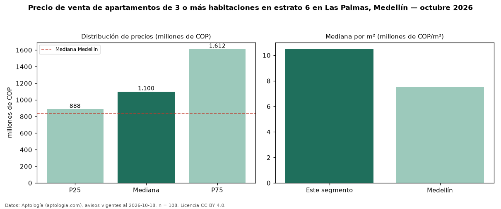

Precio de venta de apartamentos de 3 o más habitaciones en estrato 6 en Las Palmas, Medellín — octubre 2026
En Las Palmas, Medellín, la mediana de precio de venta de apartamentos de 3 o más habitaciones en estrato 6 es COP 1,10 mil millones, según 108 avisos vigentes. Eso es 5 % más que la mediana de los apartamentos en estrato 6 en venta de Las Palmas (COP 1,05 mil millones, n = 207); este segmento reúne el 52 % de esos avisos. Por metro cuadrado, la mediana es COP 10,49 millones/m² (n = 107), 1 % por debajo de los apartamentos en estrato 6 en venta de Las Palmas (COP 10,64 millones/m²). El área mediana anunciada es 111 m². La administración mediana declarada es COP 548.500 al mes (n = 70). La mitad central de los avisos va de COP 888 millones a COP 1,61 mil millones (razón 1,8), una dispersión moderada. La mediana de todos los apartamentos en venta de Medellín es COP 840 millones (+31 % de diferencia). Datos: Aptología (aptologia.com), CC BY 4.0 — https://www.aptologia.com/venta/medellin/las-palmas. Archivos: PDF, CSV con las cifras y gráfica PNG.

| Avisos únicos | 108 |
|---|---|
| Percentil 25 | COP 887.500.000 |
| Mediana | COP 1.100.000.000 |
| Percentil 75 | COP 1.611.500.000 |
| Mediana por m² | COP 10.489.510 |
Fuente: avisos vigentes de portales inmobiliarios recopilados por Aptología, deduplicados (mínimo 30 avisos únicos por celda). Precios pedidos, no cerrados. Fecha: 2026-10-18.